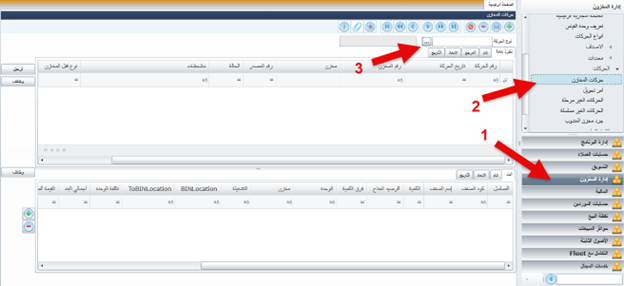
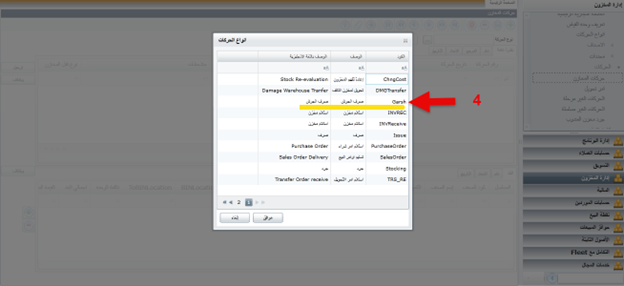
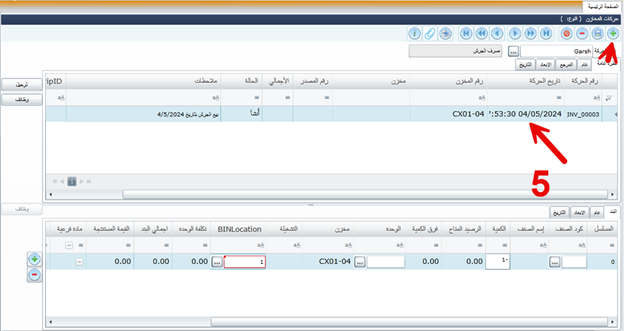
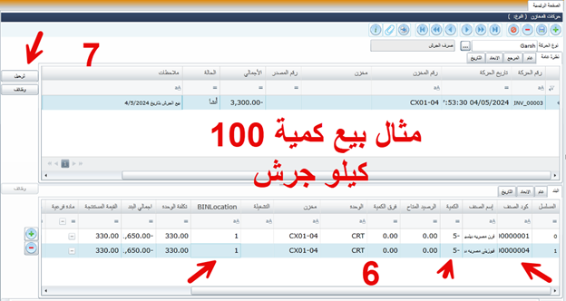
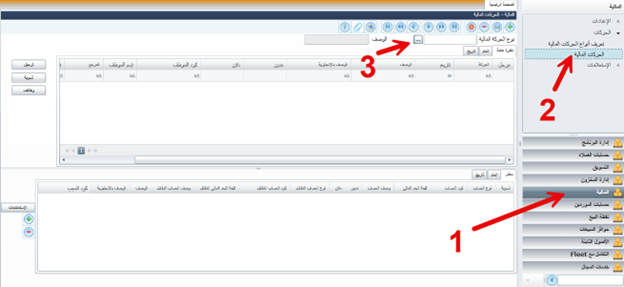
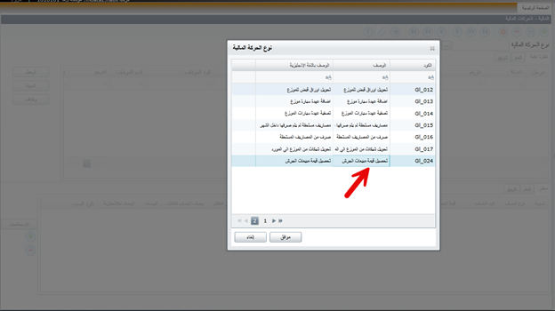
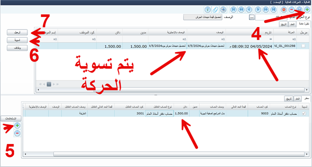

طريقة بيع الجرش
الصفحه الرئيسية
العوده الى الخلف
أولا الحركة المخزنية
- فتح ادارة المخزون
- الحركات المخزنية
- اختيار نوع الحركة

- اختيار حركة صرف الجرش


- اضافة حركة جديد
 وكتابة بيانات الحركة
وكتابة بيانات الحركة
- التاريخ
- اسم المخزن
- وصف الحركة
- اختيار الاصناف والكمية ونوع المخزن
- حفظ وترحيل الحركة بعد التاكد من الكمية


ثانيا الحركة المالية
- فتح الادارة المالية
- اختيار الحركات المالية
- اختيار نوع الحركة تحصيل قيمة مبيعات الجرش


- اضافة حركة جديدوكتابة بيانات الحركة
- يتم اضافة سطر داخل الحركة
- تسوية الحركة بالقيمة المتحصلة
- حفظ وترحيل الحركة بعد التاكد من القيمة الصحيحة
